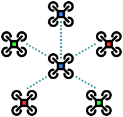

An Aggregate Vascular Morphogenesis Controller for Engingeered Self-Organising Spatial Structures
Angela Cortecchia , Danilo Pianini , Giovanni Ciatto , and Roberto Casadei

Plants

Organizations

Flocking swarms

What do they have in common?
A runtime generated hierarchical structure
The Vascular Morphogenesis Controller
The VMC is a model for the growth of artificial structures over time.
It models tree-like structures, in which every node can get information from the environment.
The leaves of the tree start by sending the amount of success they sense to the root.
The root then sends back an amount of resources based on the success received from the leaves, regulating the tickness of their connections.
But it has some limitations
VMC assumes that organizations have only a tree structure.
VMC assumes strict synchronous operations.
Restricts the model usefulness, leading to abstraction gaps.


A Possible Solution?
An implementation as a Field-based computation with the Aggregate Computing paradigm!
What is Aggregate Computing?

A macro-programming approach that defines the collective behavior of heterogeneous devices in a self-organizing system.
Based on Field Calculus abstractions, it operates in terms of field: a distributed data structure.
The Aggregate Vascular Morphogenesis Controller
Model
A node represents an agent.
A neighboring link denotes the possibility of two agents to communicate.
Each agent is assumed to have sensors:.
success sensor, resource sensor, position sensor, distance sensor
And actuators
spawning, destroying

The Aggregate Vascular Morphogenesis Controller
Implementation
(roots, regions, flaws) open source, soon in standard lib -> pattern organizzativi che prima non c’erano validation made by qualitative approach
The Aggregate Vascular Morphogenesis Controller
distinctive features
(multiple leaders, growth and shrink, merge and split)
Experiments


Conclusions / future works
per cosa possiamo usarlo?